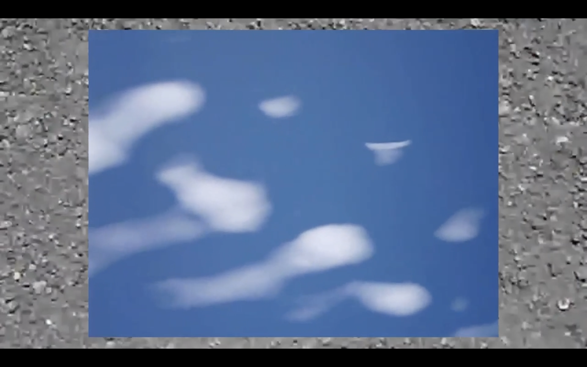
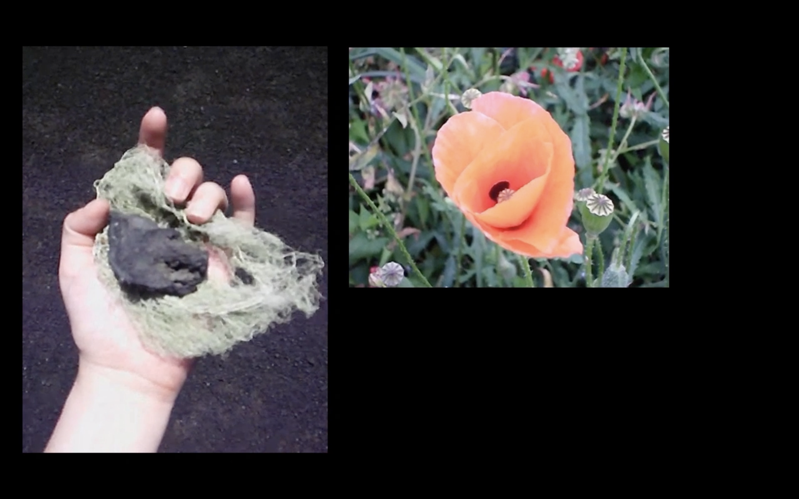
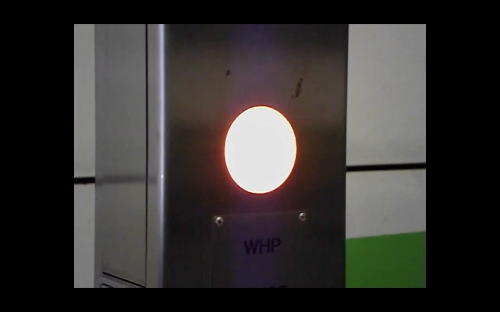
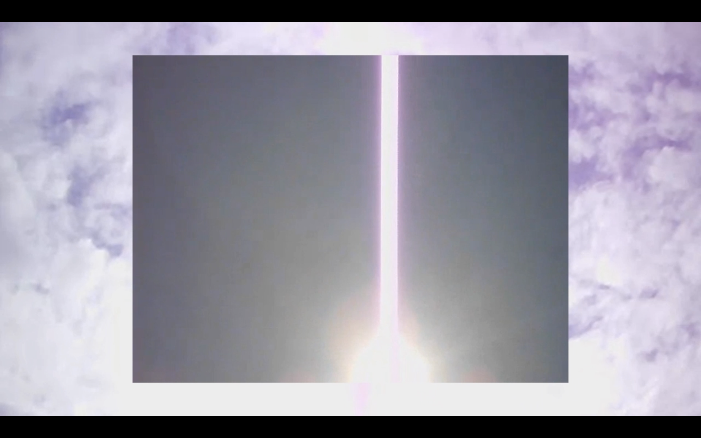
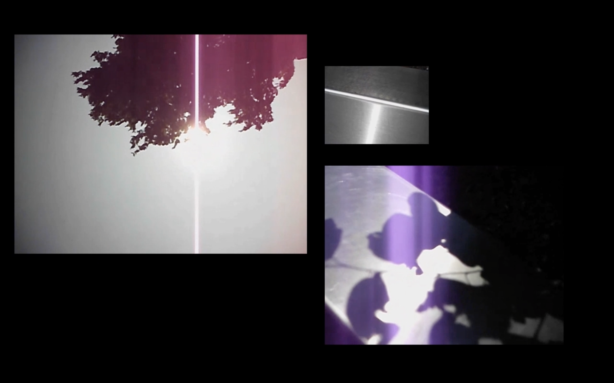
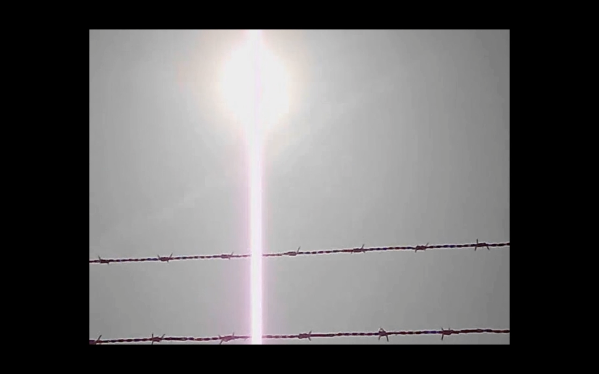
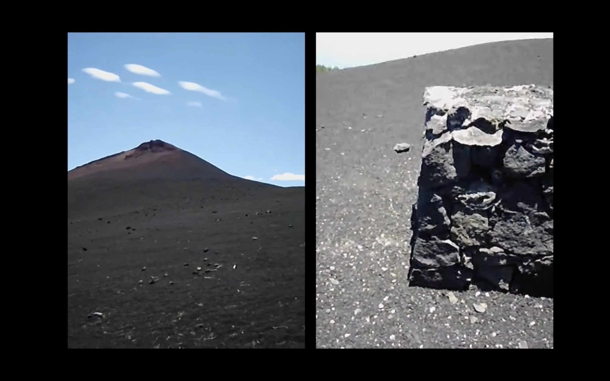
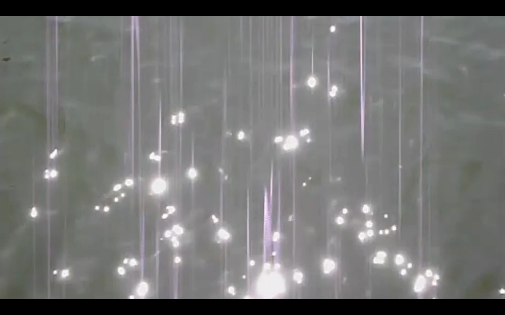

2023-2024
Video work shot between The Netherlands, Malta and Tenerife.
‘Conversations with the Sun’ is a study of dry landscapes, orbs of light and reflections in everyday materials, all coming from the sun. Links are made between each clip, where shimmering reflections in water, sun rays and bulbs of light collectively begin to resemble a unified source of energy. This visual diary resembles the idea of field notes, pastes of videos collaged together to better understand these ongoing observations.
Thinking of the colour red, remembering those hazy instances with swirling images that appear when shutting your eyes in the sunlight. The longer you stay with your eyes shut, the more entranced you become. In a way, aren’t these conversations with the sun?
All footage was taken by Martina Farrugia
Music: ‘THE SUN WAKES YOU UP’ by Miguel Herreras
Watch the video here.